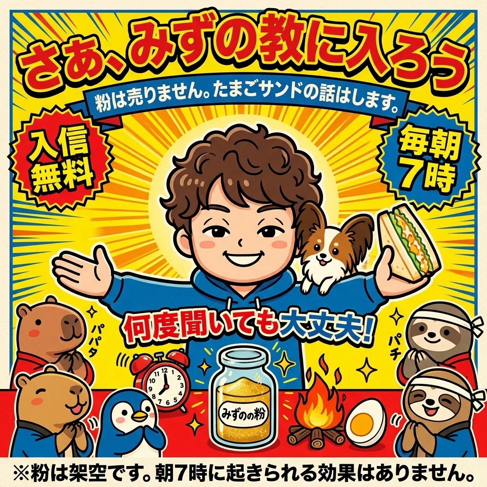

はい、そこの画面をそっと閉じた方、ちょっと待ってください！
「新モデルが出たと聞くだけで、そっとスマホを伏せる…」
「AIに相談したら長文が返ってきて、結局なにをすればいいかわからない…」
「こんなこと聞いていいのかな、と指が止まる…」
お気持ち、わかります。本日ご紹介するのは、ひとふりでAIがこわくなくなるふしぎな粉――『みずのの粉』でございます！
「ちょっと待って、怪しくないの？」と疑う奥さま、聞いて驚かないでください。
こちら、「世界一優しいAIチャット」を掲げる管理人にして、AIブース広報隊長・みずの教祖による完全プロデュース！
普段は中小企業のホームページを作るWebデザイナー……なんですが！ （客席「ふーん？」）
この男、口では「ゆっくり二度寝する時間が好き😴」と言いながら、毎朝7時に勉強会を開いているんです。月に20回ほど。 （客席「寝てないじゃない！」）
しかも「やるとなったらめっちゃやる」の次元が違う。毎日画像を作って発信するのを、100日連続……を、2回！ （客席「えっ、2回！？」）
そう、2回です。2回やる必要ありました？ 言ったら本当に毎日やるんですよ、この教祖。
気がつけばリベシティを3D化し、自分が主人公のゲームまで作り、名古屋から静岡までヒッチハイクし、ダイビングでサメと泳ぐ。 （客席「何者なのよーっ！」）
なのに好きな食べ物は、たまごサンド。朝はTKG。燻製にするのも味付きたまご。サメと泳ぐのに、食卓はたまごだらけです。
最近アイコンを変えて「認識されないかな…」と本気で悩んでいた、愛すべき教祖なのでございます。
さて、ここからが本番です。よく聞いてください。
（客席「急に怪しくなった！」）
いえ、本当なんです！ 毎朝7時から30分、oViceの「朝のAI勉強会」。あの声を耳からひとふり浴びるだけ。難しい言葉は使いません。聞くだけで大歓迎。お布団のままでも誰も怒りません。 （客席「ほんとだ、こわくない！」）
新しいAIが出れば、すぐに「読んだその日に真似できる」プロンプト付きの記事になっている。 （客席「いつ寝てるの！？」）
「今週これだけやればいい」と期限つきで道を示し、「何度同じことを聞いても構わない」「『こんなこと聞いていいのかな？』ということほど大歓迎です😆」と言い切る始末。優しすぎて逆に怪しいでしょう？
気づけば水曜21時には、おけもんとの「水曜AIラジオ」までニヤニヤ聴いている、という仕組みでございます。
AIの提案が多すぎてフリーズしていましたが、教えどおり「専用フォルダ」と「ダッシュボード」を先に頼んだら視界が一気にクリアに！ 勢い余って冷蔵庫の在庫までコックピット化してしまいました。
「遊びながらAIに慣れよう」と覗いた町が、作り始めて3日で住人47人・島4つに増えていて震えました。自分の分身が散歩して夜に帰宅するのを眺めていたら、AIより先に自分の生活リズムが整いました。
AIの回答が嬉しくて毎回グッドを押していましたが、「学習オフでも会話が使われることも！」の記事で指が止まりました。それ以来、職場でもうかつに親指を立てなくなりました。
iPhoneの横のボタンにMuseを住まわせたら快適すぎて、週1の「記憶のお掃除」まで楽しみに。ただ、ボタンを見るたびに話しかけたくなり、つい晩ごはんの相談までしています。
「実はスマホで音声会話できる」と知って試したら、深夜の話し相手が爆誕。翌朝7時の勉強会で教祖の声を聞いたとき、思わず「本家がしゃべった！」と感動しました。
新モデルの波に飲まれて動けなかった私に、「今週これだけやればいい」と絞ってくれた記事が天啓のように降臨。やり終えた達成感で、なぜかたまごサンドを買いに走りました。
危ないパスワードを直したら、勢いで「サイト公開前50項目チェックリスト」まで熟読。まだ自分のサイトもないのに、公開準備だけは完璧です。
見慣れない人がタイムラインに現れたと思ったら教祖でした。「また覚えてもらえるように頑張ればいいか！」の一言で、「記事なんて価値ないかも」という弱気が吹き飛び、赤ちゃん思考で書き始めました。
「でも、お高いんでしょう？」
……落ち着いてください。粉は売っていません。存在しません。
かわりに、入信の扉はぜんぶ 無料 でございます！
どれか1つで入信完了。あやしい粉を探してさまようのは、もうおしまい。明日の朝7時、たき火を囲む気分でそっと覗いてみてください。「頑張る人を応援したい🔥」教祖が、たまごサンドの話でお待ちしております！
※『みずのの粉』は架空の概念であり、売買・譲渡・計量は一切行っておりません。あやしい粉を探してリベシティ内をさまよう行為はお控えください。
※教祖は「ゆっくり二度寝する時間が好き」と公言しておりますが、毎朝7時に勉強会を開いている件についての矛盾は現在調査中です。
※教祖にはサメと泳ぐ・名古屋〜静岡をヒッチハイクする・100日連続発信を2回行う等の実績がございますが、信者の皆さまに同等の修行を求めることは一切ありません。
※「朝のAI勉強会」は聞くだけ参加・パジャマ参加・TKGを食べながらの参加を広く認めております。
※ご利益の感じ方には個人差があり、AIより先にたまごサンドや燻製たまごへの関心が高まる事例が報告されております。
※毎朝7時の声を浴び続けると、気づけば「コツコツが勝つコツ💪」と口走るようになる現象が報告されています。
※教祖はつい最近アイコンを変更いたしました。見慣れない姿で現れても、本人ですのでご安心ください。
※本教団の最終目標は「モルディブオフ会で乾杯すること」ですが、入信にあたってパスポートや水着のご用意は今のところ不要です。
※朝7時にスッと起きられるようになる効果はありません。